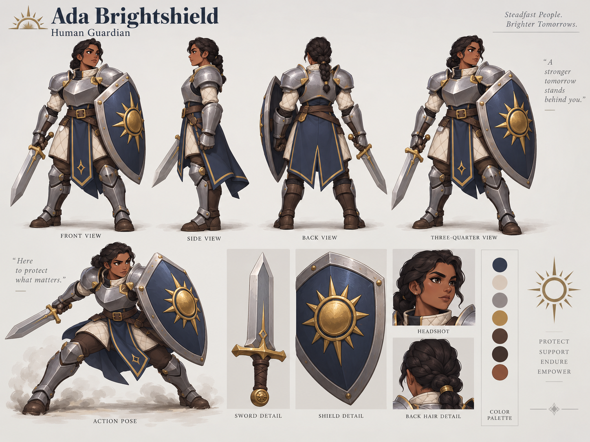
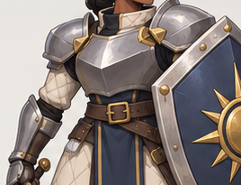
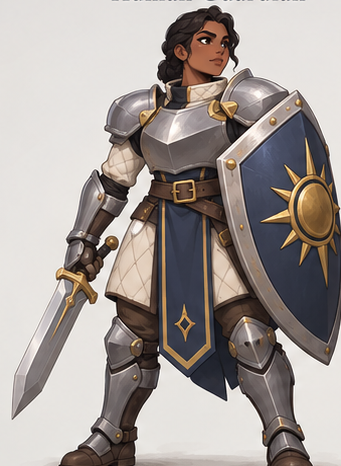
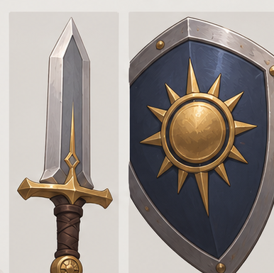
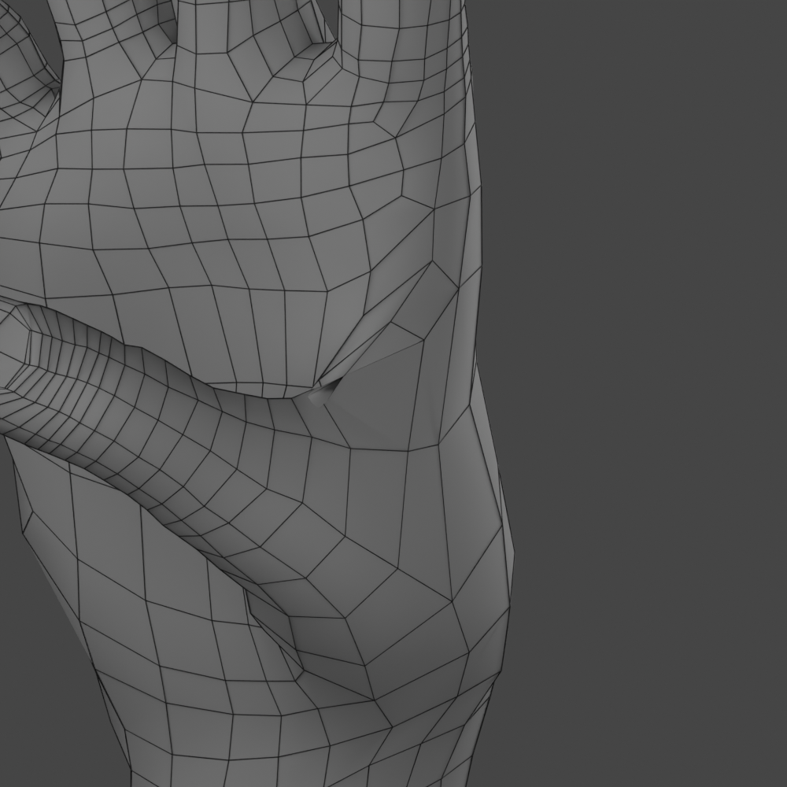

1 / Ada and the specific failure
{kind=link}

Approved Ada identity
Your supplied concept; retain current written construction decisions where views disagree.{kind=link}

Armor and costume forms
Native crop. Use for silhouette, layering, palette and proportion—not measured thickness.{kind=link}

Arm and equipment overview
Native crop. Body construction and actual game motion decide hidden clearance.{kind=link}
Glove style only
94 × 111 native crop; not upscaled. It does not supply a precise anatomical grip blueprint.{kind=link}

Sword and shield identity
Native crop. Actual existing 3D handle is the default fit target.{kind=link}

Rejected BW3 web
Supplied failure evidence. Do not use the folded posed surface as the final fixed hand.2 / Museum construction references
Study flexible versus rigid regions, shell depth, part boundaries, rolled edges and fasteners. Borrow the construction principle, not an entire unrelated costume.
Palm construction — Met 29.158.215
Compare the flexible-looking palm/liner with dorsal plate construction. Study image, not Ada geometry.
Open original collection recordDorsal plate hierarchy — Met 2002.507
Separate cuff, hand cover and digit protection. Do not copy the dense ornament.
Open original collection recordAlternate view — Met 2002.507
Alternate image endpoint located, not successfully fetched here. Open the collection if unavailable.
Open original collection recordBreastplate shape — Met collection 23143
Study broad curvature, neckline and arm opening. The museum object is not a direct fitting template.
Open original collection recordBreastplate construction — Met 2014.673
Curator description identifies separate shell/gusset/waist elements. Image availability must be checked locally.
Open original collection recordBreastplate alternate — Met 2014.673
Use additional views to understand depth and fastening; do not invent hidden structure from one image.
Open original collection record3 / Source-supported lessons and our proposed use
Do not treat a creator listing as proof of a fully inspected model. Do not treat official documentation as a result achieved on Ada.
Proko — Muscle Anatomy of the Hand
Access: Public lesson text reviewed; premium downloads not obtained
Source: The lesson distinguishes palmar thumb mass, dorsal thumb mass, pinky-side mass, and the changing web relationship.
Proposed use: Shape a substantial thenar pad and a rounded thumb/index web rather than a stretched flat membrane.
Limit: An art-anatomy lesson, not a Blender recipe or a numeric contact standard. Do not redistribute its protected lesson media.
Proko — Hands Holding Stuff N Things
Access: Public description only; full lesson NOT viewed
Source: The public description concerns hands holding objects.
Proposed use: Optional further study of enclosure and contact; not a dependency for this task.
Limit: Premium material. No purchase, access, timestamped procedure or full-video analysis is claimed.
Blender — Human Base Meshes v1.4.1
Access: Indexed official listing reviewed; archive NOT downloaded
Source: The listing identifies a 49 MB CC0 bundle requiring Blender 4.2 LTS or newer.
Proposed use: An optional alternative editable foundation if the existing derived glove cannot be remodeled efficiently.
Limit: Inspect the actual archive and its component inventory before choosing a hand. This bundle is not a pre-fitted Ada grip.
Blender 5.1 — Poly Build
Access: Documentation reviewed; title/interface text partly localized
Source: Poly Build combines vertex/face creation, moving and edge extrusion for mesh construction and retopology.
Proposed use: Rebuild the thumb web and reconnect digit roots with explicit faces.
Limit: Use the installed keymap and preview each operation. The tool does not determine anatomy.
Blender 5.1 — Bevel Modifier
Access: Documentation reviewed
Source: Bevel has selectable edge control, width interpretation, overlap clamping and normal-treatment options.
Proposed use: Author a restrained edge highlight on plate rims without rounding away the entire shape.
Limit: Overlap clamping is not an assembly-level collision solver. A shading fix cannot repair a bad silhouette.
Blender 5.1 — Solidify
Access: Documentation reviewed; localized page with English technical passages
Source: Thickness is computed in local coordinates; uniform thickness remains an approximation.
Proposed use: Make measured armor shells on new candidates; inspect real section thickness and normals.
Limit: Do not re-enable the known failing even-offset settings on the preserved BW1 garments. No guarantee of collision-free thickness.
Blender 5.1 — Apply Pose
Access: Documentation reviewed
Source: Pose as Rest Pose changes the armature rest state and affects the skinning relationship.
Proposed use: Avoid changing the shared rig merely to freeze a hand; transform independent geometry into its verified bind space.
Limit: This is not a command to apply the current MPFB pose to the shared game skeleton.
Blender — PoseBone matrix semantics
Access: Matrix semantics reviewed in the documented 4.5 API; local 5.1 API still to verify
Source: PoseBone.matrix is the final matrix in armature object space, distinct from matrix_basis.
Proposed use: Include the armature world transform exactly once in hand-local capture and bind-space reconstruction.
Limit: The equations in this kit are a proposed transform contract, not code executed on Ada; verify installed API and actual objects.
MPFB — Export Copy
Access: Documentation reviewed
Source: Export-copy operations preserve the original character while preparing a derived output hierarchy.
Proposed use: Keep indexed MPFB masters intact and explicitly author a separate fixed-hand output representation.
Limit: Choose operations deliberately; baked subdivision, modifiers and masks can change output geometry. No installed-version test performed here.
Epic — Skeletal Mesh Sockets
Access: Documentation reviewed
Source: Sockets carry bone-relative attachment offsets; mesh-specific sockets can be used when a shared skeleton needs asset-specific attachments.
Proposed use: Verify the actual sword attachment and isolate any candidate offset instead of editing all characters' shared socket.
Limit: Docs may describe a newer engine than the local project. Do not upgrade or mutate the canonical skeleton implicitly.
Epic — FBX Import Options Reference
Access: Documentation reviewed
Source: Import settings include skeleton/reference-pose changes and separate normal/tangent policies.
Proposed use: Use an isolated import, preserve reference pose, and verify the selected normal convention.
Limit: An import success is not an art or animation pass; map settings to the actual installed importer.
Epic — FBX Skeletal Mesh Pipeline
Access: Documentation reviewed
Source: The pipeline supports skeletal meshes/animations and recommends controlling triangulation.
Proposed use: Export a reviewed runtime copy with explicit triangulation and test it on the existing clips.
Limit: The documented FBX 2020.2 pipeline does not imply Blender exports an identical SDK/version; use the already calibrated local profile.
The Met — Gauntlet for the Right Hand, 29.158.215
Access: Collection page and search-returned palm image reviewed
Source: The record identifies a Milanese steel-and-gold gauntlet; the palm image shows construction unlike the plated dorsal side.
Proposed use: Study separation of the palm covering, finger backing and cuff; keep Ada's palm comparatively simple.
Limit: Do not infer a complete moving mechanism from one still. This is historical structure inspiration, not Ada's final design.
The Met — Right Gauntlet, 2002.507
Access: Collection text and dorsal image reviewed; alternate image endpoints located
Source: The listed gauntlet combines steel, textile/leather and rich surface decoration; its image distinguishes cuff, hand plates and finger defenses.
Proposed use: Use the large-to-small plate hierarchy, not its densely ornamented visual treatment.
Limit: The historic object does not validate our closed-hand geometry. Do not reproduce all engraving on Ada.
The Met — Locking Gauntlet, 36.149.13
Access: Detailed curator text reviewed
Source: A specific mitten-type example has articulated metacarpal/finger lames and could be secured closed.
Proposed use: Study overlapping protection and cuff construction. It reinforces the distinction between a designed closed shape and a universal articulated hand.
Limit: Not a requirement to give Ada a mitten or add a locking mechanism; no physical weapon-making guidance intended.
The Met — Breastplate, 2014.673
Access: Detailed curator text reviewed; front/back image endpoints located
Source: The record describes a main shell, movable armhole gussets, turned edges, shoulder fastening and lower overlapping lames.
Proposed use: Construct breast/back interfaces, edges and waist transition as assemblies, not a single inflated torso.
Limit: Museum dimensions are not Ada dimensions. Some surviving/replaced hardware is explicitly modern; do not infer all original kinematics.
The Met — Breastplate, German or Austrian
Access: Collection page and front image reviewed
Source: The image provides a readable example of a broad central shell, arm openings and separately readable lower bands.
Proposed use: Study cross-sectional curvature and restrained form hierarchy before adding decoration.
Limit: Not a female-body fitting blueprint or an exact costume match; use Ada's own approved reference for identity.
The Met — Breastplate with Tassets, 2013.28
Access: Collection description reviewed
Source: The description distinguishes the breastplate, movable gussets, waist plate, skirt and tassets.
Proposed use: Keep hip/waist protection separate from the chest shell so stepping can be designed.
Limit: Do not add all these elements if absent from Ada's approved design.
Cleveland Museum — Pauldron (right), 1916.1816.c
Access: Object text reviewed; extracted page reported image unavailable
Source: The record identifies shoulder armor with etched decorative bands and roundels.
Proposed use: A research target for shoulder silhouette and later restrained surface accents.
Limit: No detailed image or motion was obtained here. The gallery links to the object rather than inventing a plate arrangement.
Blue Spirit — Fantasy Armor
Access: Indexed creator description reviewed; viewer/archive NOT inspected
Source: The creator lists Blender 3.5, Substance texturing, 15.5k triangles and CC Attribution licensing.
Proposed use: Optional one-model inspection of part organization and material hierarchy.
Limit: License/archive must be checked on acquisition. No claim that the model is rigged, compatible, high quality under motion, or licensed for every intended use.
Customizable Armor set with damage — original ArtStation breakdown
Access: Indexed creator text reviewed; full page/visual breakdown not loaded
Source: The author describes staged damage layers, planned UVs and packed masks for Unreal materials.
Proposed use: Defer damage variants; retain intentional UV/material-mask planning after the undamaged silhouette works.
Limit: Do not claim the videos/images were reviewed. This is optional pipeline inspiration, not instructions copied from a paid course.
The Met — Open Access image/data policy
Access: Policy reviewed
Source: The Met makes designated public-domain images available under CC0; other images may have restrictions.
Proposed use: Use only individually verified Public Domain/OA images when caching references.
Limit: A museum-wide policy is not blanket clearance for every page image. No third-party media is bundled in this kit.
Blender 5.1 — Render Baking
Access: Documentation reviewed; localized title, relevant technical passages readable
Source: Selected-to-active transfers surface detail; tangent-space normals can be used on animated objects.
Proposed use: Bake fine quilting, shallow engraving and edge treatment after geometry and the runtime mesh are stable.
Limit: Normal detail does not change silhouette or solve collision; inspect cage, rays, seams and engine convention.